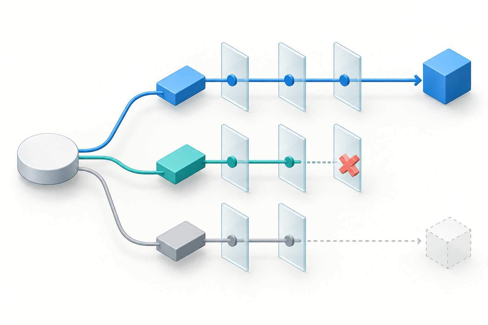
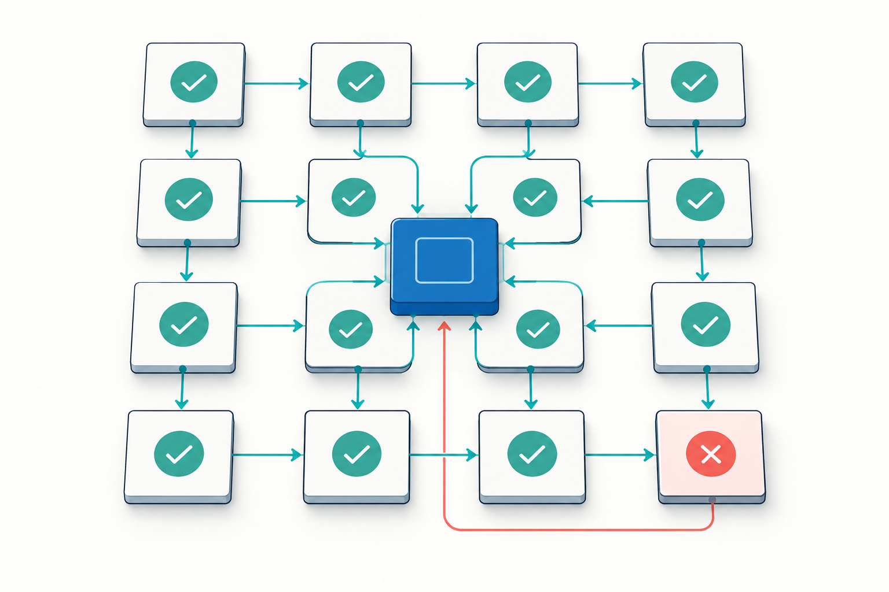

01 / Analytical reliability
Verification First
A compact contract for checking assumptions, alternatives, calculations, and uncertainty before answering.
Use it when a plausible first answer could still be wrong: policy interpretation, quantitative decisions, causal claims, or evidence-heavy synthesis.

Ready to use
Copy the prompt
Append this text to your task request. The tested wording is kept intact.
Treat this as a difficult, multi-step analytical task where correctness matters more than speed.
Think hard about the problem. Be thorough and check your work carefully.
Do not stop at the first plausible answer. Explore the problem sufficiently before committing to a conclusion.
Before finalizing:
- identify the material assumptions behind your conclusion;
- consider credible competing explanations or alternative solutions;
- actively look for counterexamples, contradictory evidence, edge cases, and failure modes;
- verify important factual claims against the strongest available evidence;
- where practical, independently cross-check critical conclusions using a different method, source, or line of reasoning;
- resolve material contradictions rather than silently choosing one side;
- re-check calculations, dates, causal claims, and logical dependencies that materially affect the answer.
Continue analyzing, checking, and revising until the important success criteria of the task are satisfied.
Do not manufacture certainty. Clearly distinguish established facts, strong inferences, tentative inferences, and unresolved uncertainty.
Optimize the underlying analysis for correctness, completeness, and robustness rather than speed. The final answer may be concise when appropriate, but do not reduce the depth of analysis or verification merely to make it shorter.
Provide the final conclusions, supporting evidence, important caveats, and concise rationale; do not expose private chain-of-thought.Example task: Which of two recovery plans meets a 15-minute RPO and a two-hour RTO?
Mechanism
How this pattern works
- 01
Frame the conclusion as provisional
- 02
Test the strongest alternative and edge cases
- 03
Verify critical claims, then state uncertainty

Research basis
What is supported
The short “think hard” cue increased reported reasoning tokens in a small published test; independent-verification research supports the mechanism. Neither establishes the accuracy of this full prompt.
Known limits
Where to be careful
It cannot switch the model's actual effort setting or guarantee that verification happened. Without evidence or tools, self-checking may be superficial; extra length can add cost without improving accuracy.